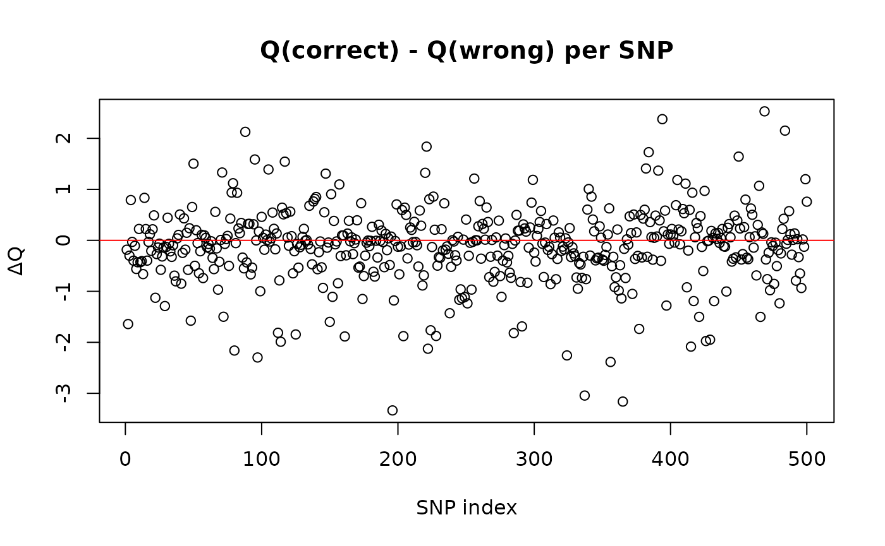

Model Fit Diagnostics with the Q Statistic
Q-stat.RmdOverview
In this vignette we show how to use the Q statistic
in fungwas to compare parametric mappings of quantile GWAS
slopes to competing distributional models.
The Q statistic is defined as
[ Q = (b - W ){-1} (b - W ),]
where:
- are the observed quantile slopes,
- (W ) are the slopes implied by the fitted parametric model,
- () is the estimated covariance of the slopes.
A small Q indicates that the model is consistent with the observed slopes. A larger Q indicates misfit.
Important caveat: Because the covariance estimates () used here are approximate (especially under diagonal or plugin modes), the Q statistic should be interpreted heuristically. It is not a formal likelihood-ratio test. In practice, the main diagnostic is whether a model’s average Q is much smaller than that of an alternative model. Absolute calibration against chi-square reference distributions is unreliable.
Example: vQTL vs Log-normal Model
We simulate phenotypes from a mean + variance QTL model, and then compare fit against a log-normal model where the SNP only influences the mean (with variance tied through the log-normal link).
# -------------------------
# 1. Simulate genotypes
# -------------------------
N <- 15000
P <- 500
maf <- runif(P, 0.05, 0.5)
G <- matrix(rbinom(N * P, 2, rep(maf, each = N)), nrow = N, ncol = P)
colnames(G) <- paste0("SNP", seq_len(P))
# -------------------------
# 2. Define true effects
# -------------------------
beta_mu_true <- rnorm(P) / 40
beta_sigma2_true <- rnorm(P) / 40
# -------------------------
# 3. Simulate phenotype
# -------------------------
mu0 <- 4.0
sd0 <- 0.6
mu <- mu0 + G %*% beta_mu_true
sigma2 <- sd0^2 + G %*% beta_sigma2_true
sigma2[sigma2 <= 0] <- 1e-4 # guard against negative variances
Y <- rnorm(N, mean = mu, sd = sqrt(sigma2))Stage 1: Quantile GWAS
We first compute quantile slopes using RIF regression.
taus <- seq(0.05, 0.95, 0.05)
stage1 <- quantile_gwas(
Y, G,
taus = taus,
benchmark = FALSE,
verbose = FALSE
)Stage 2: Correct Model (Mean + Variance QTL)
We map slopes to mean and variance parameters using
make_weights_vqtl.
W_var <- make_weights_vqtl(taus, stage1$q_tau, mu = mean(Y), sd = sd(Y))
fit_correct <- param_gwas(
stage1,
transform = "custom_W",
transform_args = list(W = W_var),
se_mode = "dwls"
)Stage 2: Wrong Model (Log-normal)
We now compare against a log-normal distribution. Here, effects on the meanlog implicitly alter both the mean and variance, but without an independent variance parameter.
logY <- log(Y)
fitlog <- list(
estimate = c(meanlog = mean(logY), sdlog = sd(logY))
)
q_tau <- as.numeric(quantile(Y, taus, type = 8))
dist_cdf <- function(y, params) plnorm(y, meanlog = params$meanlog, sdlog = params$sdlog)
dist_pdf <- function(y, params) dlnorm(y, meanlog = params$meanlog, sdlog = params$sdlog)
grad_fd_meanlog <- make_fd_grad("meanlog", dist_cdf)
grad_fd_sdlog <- make_fd_grad("sdlog", dist_cdf)
W_fd <- make_weights_generic(
taus, q_tau, dist_cdf, dist_pdf,
params = list(meanlog = fitlog$estimate[1], sdlog = fitlog$estimate[2]),
grad_funcs = list(beta_meanlog = grad_fd_meanlog,
beta_sdlog = grad_fd_sdlog)
)
fit_wrong <- param_gwas(
stage1,
transform = "custom_W",
transform_args = list(W = W_fd),
se_mode = "dwls"
)Compare Q Statistics
cat("\n--- Model Comparison ---\n")
#>
#> --- Model Comparison ---
cat("Correct model Q (per SNP):\n")
#> Correct model Q (per SNP):
print(summary(fit_correct$Q))
#> Min. 1st Qu. Median Mean 3rd Qu. Max.
#> 0.595 3.433 4.992 5.747 7.322 19.607
cat("\nWrong model Q (per SNP):\n")
#>
#> Wrong model Q (per SNP):
print(summary(fit_wrong$Q))
#> Min. 1st Qu. Median Mean 3rd Qu. Max.
#> 0.6344 3.5250 5.0815 5.8670 7.2588 21.6910
cat("\nAverage Q difference (wrong - correct):\n")
#>
#> Average Q difference (wrong - correct):
mean(fit_wrong$Q - fit_correct$Q)
#> [1] 0.1196326
plot(fit_correct$Q - fit_wrong$Q,
main = "Q(correct) - Q(wrong) per SNP",
ylab = "ΔQ", xlab = "SNP index")
abline(h = 0, col = "red")
In this example, the true vQTL model yields systematically lower Q values than the misspecified log-normal model, confirming that the variance effects are necessary to explain the quantile slopes.
Key Takeaways
- The Q statistic in
fungwasis a heuristic measure of model adequacy, not a calibrated chi-square test. - When comparing competing models, a large difference in average Q provides evidence for which model better captures the distributional shape of the phenotype.
- However, because SEs are approximate, absolute reference to chi-square distributions is discouraged.
- In practice, Q is best used to ask: Does my chosen parametric system capture the quantile slopes better than a simpler alternative?
Conclusion
The Q statistic provides a useful way to compare alternative
parametric models in fungwas. It should be seen as a
diagnostic tool, helping identify whether variance
effects, mixtures, or other parameters are needed to describe the
phenotype distribution, rather than as a formal hypothesis test.